È arrivato veramenete il momento di constatare se realmente i metodi
utillizati rendono illegibili la memoria.
Premetto che l'Analisi Forense e un argomento molto complesso e molto
professionale anche noi lo tratteremo in modo "superficiale".Proxy
In quasi tutte le Analisi Forense si dovrebbe lavorare in ambiente più
asettico possibile e senza l'interferenza di tool in backround.
Un ricercatore forense oltre ad avere la copia dei dati (per evitare incidenti
di percorso) possiede anche strumenti adatti per effettuare lavri "puliti"
e senza autp-sabotamenti.
Ecco perchè è preferibile utilizzare un Sistema Operativo Live
contenente i tool per procedere alla ricerca nel disco.
Possiamo innanzitutto identificare due tipi di Sistemi Operativi:
I Rescue OS andava forte una volta ma oggi sono stati rimpiazzati: dal
celebre: Hiren's Boot CD,
Ultimate Boot CD e
FalconFour's Ultimate Boot CD.
L'unico che sembra ancora essere in via di sviluppo è
SystemRescueCd.
Il “mercato” dei Forensics OS è invece più florido:
oltre al fatto che molte penetration tests integrano toolset dedicati
esistono anche interi sistemi operativi pensati esclusivamente per questa pratica.
Èstremamente importante che l'OS non intacchi minimamente il disco su cui lavorare.
Sebbene questo rischio può essere limitato da
Write Blocker
(esso si mette tra hard disk e pc per non toccare/alterare il disco).
Utilizzando la RAM mode (in fase di boot loade) si può accedere
ad ogni memoria in modalità "solo lettura" per non alterare il
disco,il ch` è quasi un obbligoconsiderando che un Write
Blocker può costare dai 500€ in su.
La più celebre in Italia è CAINE
una distribuzione tutta italiana basata su Ubuntu e utilizzata anche dalle forze dell’ordine.
CAINE OS è a tutti gli effetti una distribuzione GNU/Linux pensata per
funzionare in modalità Live, caricata su una USB o un DVD.
Noi useren,o CAINE solo per vedere traccie lasciate nelle partizioni che
credevamo di aver eliminato.
CAINE offre anche una logica di "mount in read-only": questo significa che
non solo dovremo decidere quali partizioni montare PRIMA di poterle utilizzare
ma eviteremo anche di inquinare le zone che andremo a scannerizzare.
TestDisk è un tool pensato per recuperare intere partizioni eliminate da un disco fisso. Oltre a questa divina possibilità offre anche il recupero di settori di boot danneggiati con filesystem FAT e NTFS e ripristinare la Master File Table delle partizioni NTFS. La tool si presenta in modalita riga di commando (senza GUI) il suo funzionamento è molto semplice.
CAINE PhotoRec è un tool abbinato a TestDisk che ci permette di recuperare file, documenti, video, immagini e altro da memorie esterne o interne.La sua peculearità e che non opera in modalità write evitando cosi di operare e commetere qualche errore come riscrivere il disco etc...
Photorec e disponibile per qualunque sistema operativo:
PhotoRec viene distribuito in due versioni: GUI e CLI. La versione GUI è
ovviamente più semplice in quanto gestisce tutto da interfaccia grafica.
Ovviamnete se sul nostro O.S non e presente non servirà fare altro che installarlo,
con un semplice comando da terminale.
$ sudo apt-get install qphotorec
Aspettiamo che tutto venga installato e lo apriamo col commando:
$ sudo qphotorec
Ecco come si presenta la tool:
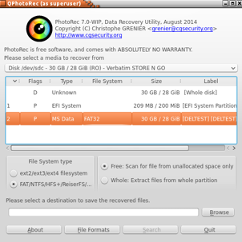
Se non riuscite a vedere la partizione in cui volete lavorare dovrete selezionare il
disco che contiene la partizione.In questo caso e la Select Box contenente "Verbatim STORE N GO".
Selezionate la partizione in cui volete lavorare,(nell'esempio FAT32|30 GB...)il file system,
il tipo di scansione Free/Whole (nel nostro caso Free va benissimo) e infine scegliere la destinazione
su dove salvare il tutto.
Ora non dobbiamo far altro che aspettare che il programma finisca di
scansionare il drive.
Per i più esperti c'è sempre il terminale.
Bisogna vedere se e installata l'ultima release col commando:
$ sudo apt-get install photorec
Se nel nostro O.S e presente la tool non resta che lanciarla col commando:
$ sudo photorec
Come abbiamo visto abbiamo richiamato anche qui il sudo in quanto dobbiamo
assicurarci che PhotoRec sia lanciato in modalità amministratore.
Siamo ora di fronte a una schermata che ci lista tutti i dischi riconosciuti nel sistema:
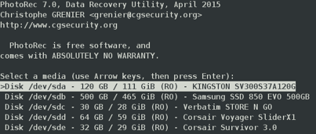
Possiamo sceglierne uno con i tasti Su/Giù, selezionarlo con Invio o in caso di
errore premere il tasto Q.
È arrivato il momento di scegliere la partizione su cui vogliamo lavorare
(selezionando Whole Disk effettueremo un recupero su tutto il disco):
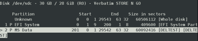
Scegliamo che tipo di filesystem viene utilizzato:
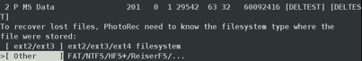
Se scegliamo di scansioanre una partizione ci verrà chiesto se vogliamo
scasnsionare tutto il disco o solo i settori vuoti.
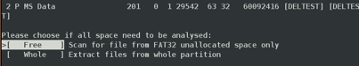
Ora siamo pronti a scegliere dove salvare i risultati.Ricordate che i tasti utilizzati
poco prima valgono anche qui (in particolare Invio per entrare in
una cartella e Q per tornare indietro) con l’aggiunta del tasto C per selezionare la
cartella (e le sottocartelle).Se siamo entrati in una cartella sbagliatata si pu&oigrave;
sempre tornare indietro premendo sui due puntini.
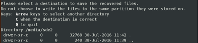
Se è stato fatto tutto secondo i piani il software inizierà a scavare nella
partizione desiderata e quindi a mettere tutto dentro una cartella dedicata.
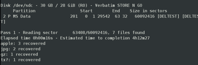
Vediamo di fare qualche esempio:abbiamo formattato(senza alcun shredding) una USB la quale conteneva
in passato Ubuntu.È stata creata quindi una partizione FAT in cui abbiamo aggiunto i seguenti file:
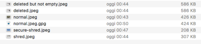
Ogni file è stato rinominato in base alle azioni che abbiamo eseguito:
Vediamo come si comporta PhotoRec:
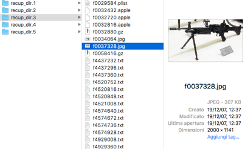
Nel nostro caso sono stati recuperati oltre 17 GB di file!
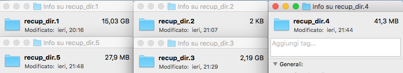
Com'è possibile??
All'inizio di questo esempio abbiamo spiegato che la nostra chiavetta è stata
formattata in FAT tramite un semplice comando di formattazione.Questa chiavetta
prima della formattazione conteneva una distribuzione GNU/Linux (Ubuntu) e prima
ancora era una semplice USB utillizata per lo spostamento dei file su OSX.
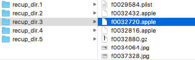
In una delle dir recuperate troviamo dei files contenenti l'estensione .apple,
sintomo che il sistema operativo precedentemente usato era appunto OSX.
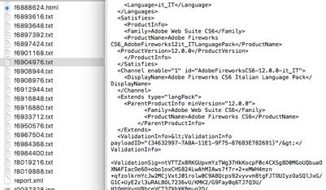
Da questo file possiamo capire che all'interno era presente un file di configurazione
di Adobe Fireworks.
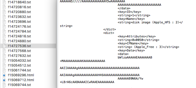
In questa porzione abbiamo trovato una partizione HFS,rafforzando l'ipotesi che
e stata usata in ambiente OSX.
Ma voi vi chiederete: e i files?
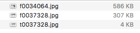
Ci risultano tre file,andiamo ad esaminarli: